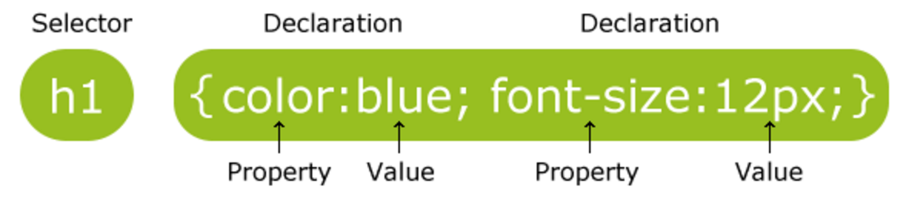
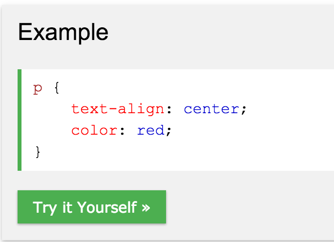
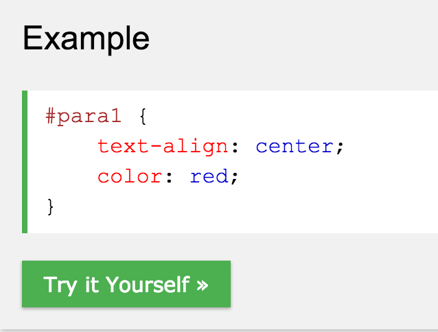
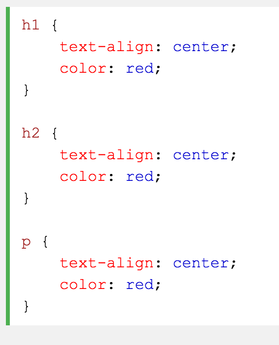
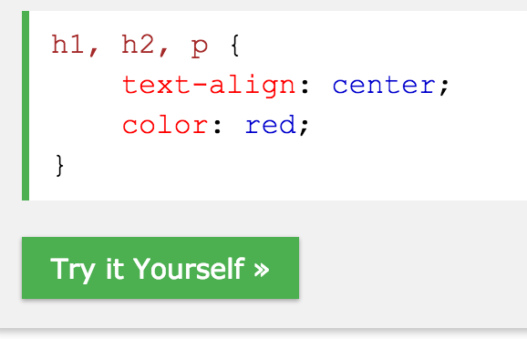
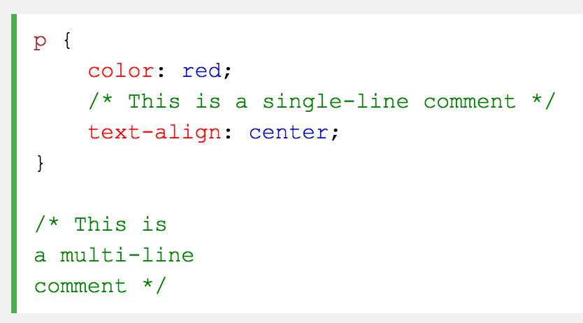
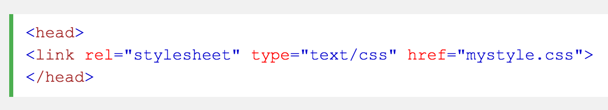
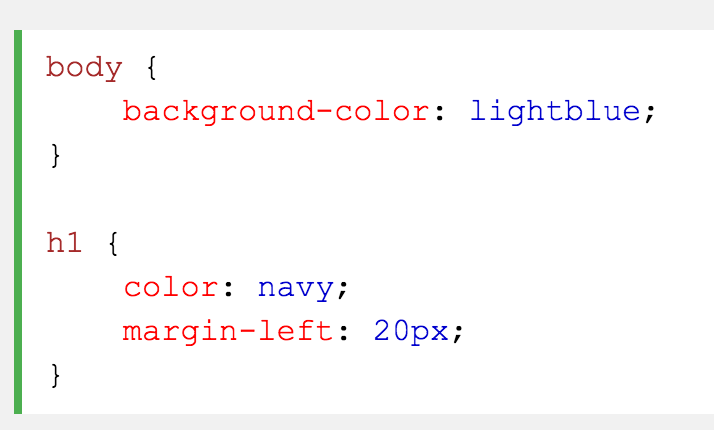
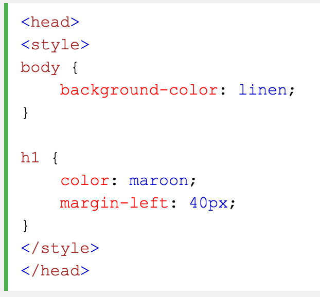
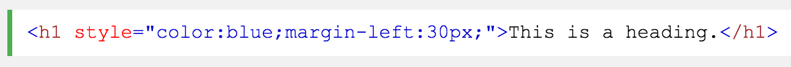

A CSS rule-set consists of a selector and a declaration block:
The selector points to the HTML element you want to style. The declaration block contains one or more declarations separated by semicolons. Each declaration includes a CSS property name and a value, separated by a colon. A CSS declaration always ends with a semicolon, and declaration blocks are surrounded by curly braces.
The element selector selects elements based on the element name. You can select all < p> elements on a page like this (in this case, all < p> elements will be center-aligned, with a red text color):
The id selector uses the id attribute of an HTML element to select a specific element. The id of an element should be unique within a page, so the id selector is used to select one unique element! To select an element with a specific id, write a hash (#) character, followed by the id of the element. The style rule below will be applied to the HTML element with id="para1": Example
The id selector uses the id attribute of an HTML element to select a specific element. The id of an element should be unique within a page, so the id selector is used to select one unique element! To select an element with a specific id, write a hash (#) character, followed by the id of the element. The style rule below will be applied to the HTML element with id="para1": Example
If you have elements with the same style definitions, like this:
It will be better to group the selectors, to minimize the code. To group selectors, separate each selector with a comma. In the example below we have grouped the selectors from the code above:
Comments are used to explain the code, and may help when you edit the source code at a later date. Comments are ignored by browsers. A CSS comment starts with /* and ends with */. Comments can also span multiple lines:
With an external style sheet, you can change the look of an entire website by changing just one file! Each page must include a reference to the external style sheet file inside the < link> element. The < link> element goes inside the < head> section:
An external style sheet can be written in any text editor. The file should not contain any html tags. The style sheet file must be saved with a .css extension. Here is how the "myStyle.css" looks:
An internal style sheet may be used if one single page has a unique style. Internal styles are defined within the < style> element, inside the < head> section of an HTML page:
An inline style may be used to apply a unique style for a single element. To use inline styles, add the style attribute to the relevant element. The style attribute can contain any CSS property. The example below shows how to change the color and the left margin of a < h1> element:
